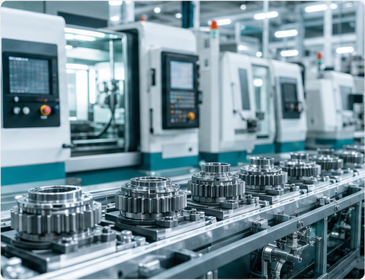
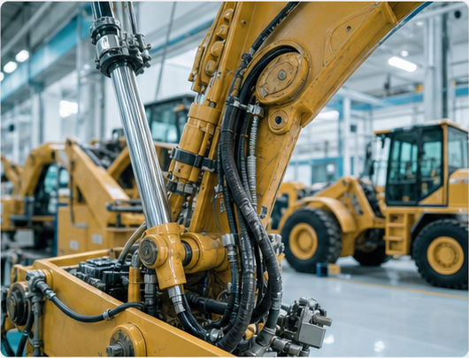
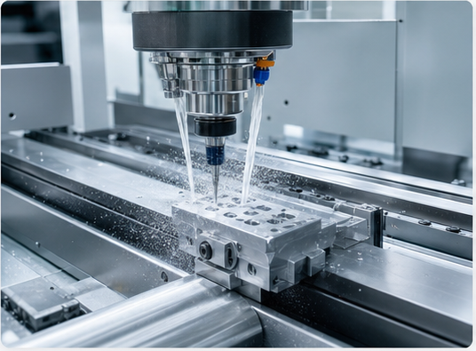
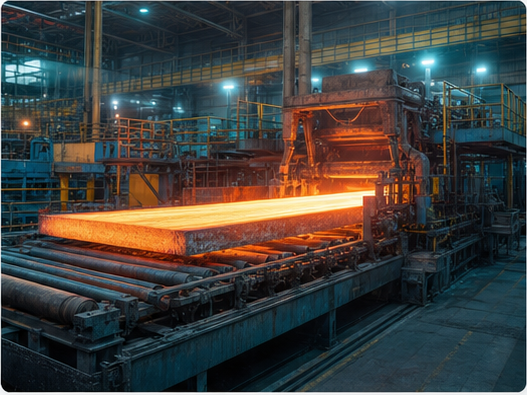
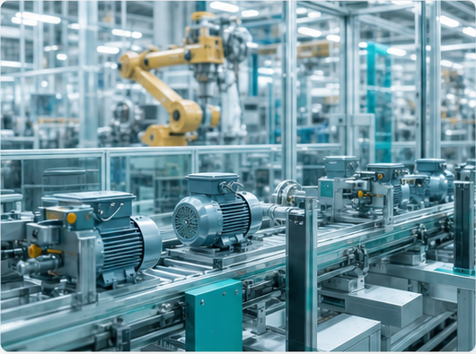

工业齿轮油
用于齿轮箱、减速机及重载传动系统润滑保护。
- 适用设备
- 风机齿轮箱、工业减速机、重载传动装置
Product Center
首页展示核心产品分类，完整型号、资料下载和应用说明进入产品中心查看。
用于齿轮箱、减速机及重载传动系统润滑保护。
DuraHyd、DuraSlide、DuraGuide 覆盖液压传动、导轨和滑动面润滑。
XheroGel 系列覆盖高温、极压、低温、高速、防水等方向。
Tomo 系列覆盖油基切削油、水基冷却液、半合成切削液。
DuraKnit 面向针织设备润滑维护和连续运行保养。
Anti-Ios 系列覆盖通用防锈、长效防锈、硬膜防锈与脱水防锈。
Applications
围绕设备类型、运行负荷和维护目标，匹配更适合现场工况的润滑产品与应用建议。
齿轮箱、轴承和长期运行设备的润滑维护支持。

加工液、液压油和防锈保护覆盖零部件加工链路。

液压系统、传动部位和重载工况的润滑保护。

导轨、切削、冷却、防锈和设备维护的综合支持。

高温、重载、水汽和连续运行环境下的润滑服务。

覆盖液压、齿轮、轴承、导轨和公用工程设备。
About Xhero
上海希罗石油化工有限公司立足工业润滑领域，面向制造业客户提供工业润滑油、润滑脂、金属加工液、防锈油及相关应用支持。公司围绕齿轮传动、液压系统、导轨滑动、轴承润滑、金属加工和防锈保护等典型工况，结合设备负荷、运行环境和维护要求，为客户提供更匹配的产品建议与替代选型方案。